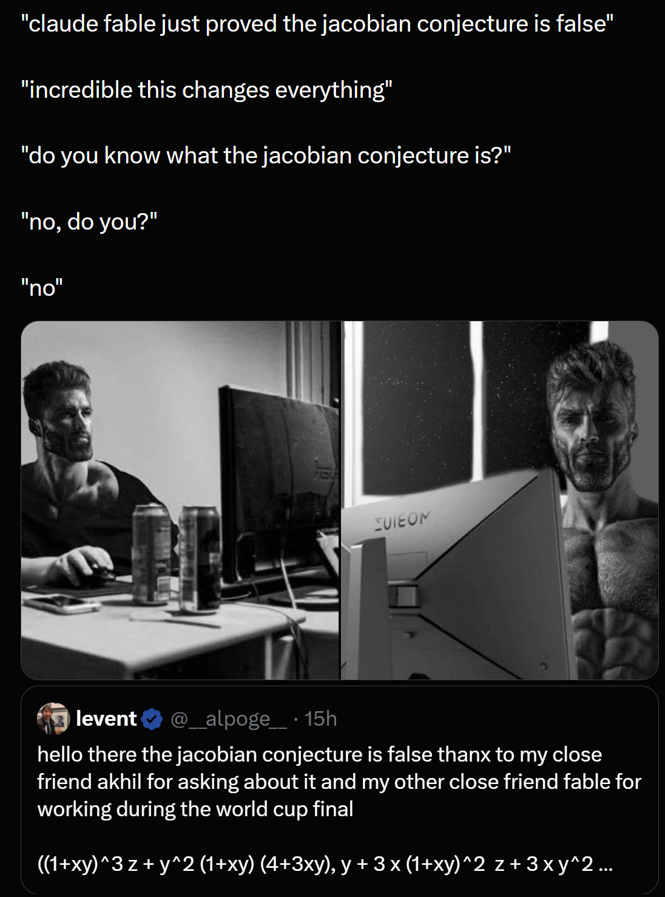
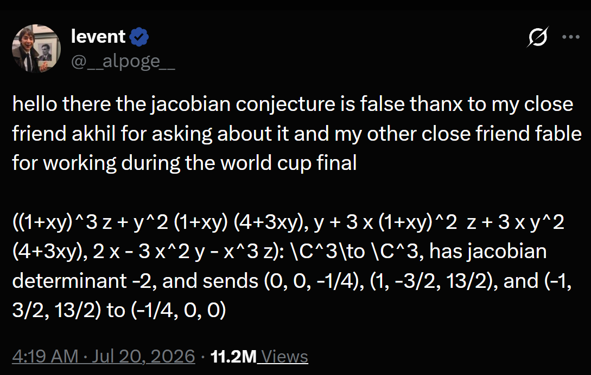
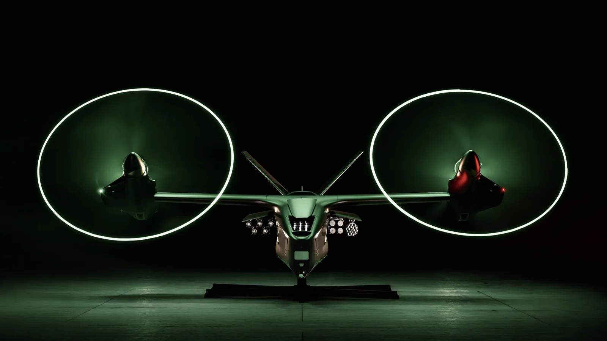

I problemi furono tradotti a mano in linguaggi formali. Un esercizio richiese pochi secondi dopo la formalizzazione; altri fino a tre giorni.
N0
Novità
Aggiornamenti sull’AI, raggruppati per giorno. Il titolo resta compatto; il contesto si apre con un clic.
Giorno per giorno
2 giorni · 3 notizieIMO 2026: il 42/42 arriva da modelli che possiamo già usare Nel 2024 era argento, nel 2025 oro: ora il massimo sembra quasi non fare più rumore.
La soglia si è spostata
Da «quasi oro» al punteggio pieno in due anni.
Nel 2024 AlphaProof e AlphaGeometry 2 arrivarono a 28 punti su 42, livello argento. Nel 2025 una versione sperimentale di Gemini Deep Think raggiunse 35 su 42, livello oro; OpenAI dichiarò lo stesso punteggio in una prova separata. Erano risultati annunciati dai laboratori come traguardi storici.
Nel 2026 Deedy Das ha messo i sei problemi dell’anno davanti a modelli già accessibili al pubblico. Tre configurazioni sono arrivate a 42 su 42 nel suo test. La notizia ha circolato soprattutto in un post e in un repository pubblico: il salto è enorme, il rumore molto meno.
28 → 35 → 42
Il confronto mostra il miglior risultato AI reso pubblico in ciascun anno. Le condizioni, però, non sono identiche.
2024AlphaProof + AlphaGeometry 2
28/42argento
2025Gemini + OpenAI sperimentali
35/42oro
2026Fable 5 · Sol · Kimi K3
42/42massimo
Gemini produsse prove in linguaggio naturale entro 4,5 ore e fu certificato dai coordinatori IMO. OpenAI dichiarò 35/42 in una valutazione separata, non certificata dall’IMO.
Fable arrivò al massimo al primo passaggio. Sol partì da 39 e Kimi da 36; entrambi raggiunsero 42 dopo indicazioni sui difetti e nuovi tentativi.
Per leggere il salto serve una scala logaritmica.
Nel 2026 abbiamo costi API dichiarati. Per il 2024 possiamo ricostruire solo uno scenario dai budget TPU del paper; per i modelli oro del 2025 il costo non è stato pubblicato.
2024 · scenario, non fattura≈ $16.200–$162.000Il paper mostra budget TTRL da 50 a 500 TPU-days per problema. Applicandoli ai cinque problemi affidati ad AlphaProof e al listino v6e on-demand di $2,70 per chip-ora si ottiene questo ordine di grandezza. Restano esclusi AlphaGeometry 2, Gemini, lavoro umano e addestramento.
2025 · oroCosto non pubblicatoNé l’annuncio di Gemini né il model card comunicano chip, token o spesa del sistema da 35/42. L’unico riferimento economico vicino è un test pubblico diverso di MathArena: circa $400 per 24 risposte finali, ma il miglior modello si fermò a 13/42.
2026 · costi dichiarati$20,54–$51,05I totali di Deedy includono riparazioni e problemi tecnici. Limitandosi ai passaggi produttivi: circa $9,74 per Sol, $14,49 per Kimi e $38,83 per Fable.
Fuori scala: il paper AlphaProof dichiara anche circa 180.000 TPU-days per la pipeline specializzata di auto-formalizzazione e reinforcement learning. Valorizzati allo stesso listino v6e sarebbero circa $11,7 milioni, ma non è la spesa effettiva comunicata da Google, non include il pre-training generale e soprattutto non è il costo di svolgere una singola IMO.
“Si può usare” non significa “è open source”.
I tre modelli generali del test sono disponibili a utenti o sviluppatori. Solo Kimi ha annunciato anche il rilascio completo dei pesi.
Il modello si usa, ma i pesi restano chiusi.
Disponibilità Anthropic ↗Accessibile come servizio; i pesi non sono aperti.
Disponibilità OpenAI ↗I pesi completi sono promessi entro il 27 luglio 2026: oggi non sono ancora scaricabili.
Annuncio Kimi ↗Ha pubblicato sei prove formalmente verificabili; costo e accesso generale al sistema non sono dichiarati.
Repository Axiom ↗La vera notizia è quanto poco sembri fare notizia.
Tra il 2024 e il 2026, il massimo dell’IMO è passato da traguardo sperimentale a risultato ottenuto più volte con modelli accessibili al pubblico. Non esistono dati comparabili sull’attenzione online ricevuta nei tre anni, quindi non si può affermare con certezza che oggi «non se ne parli». Il contrasto resta comunque netto: nel 2024 e nel 2025 furono i laboratori a presentare i risultati con grandi annunci ufficiali; nel 2026 il 42/42 è emerso da un test indipendente, raccontato in un post e documentato su GitHub. È un esempio di quanto rapidamente cambi ciò che viene percepito come straordinario nell’AI.
Controesempio alla congettura jacobiana: Alpöge cita Claude Fable La formula regge; il ruolo preciso del modello nel lavoro non è ancora documentato.
01Il meme

02Il post originale

Verificato
Il determinante jacobiano è sempre −2 e i tre punti indicati collidono.
Riportato
Alpöge attribuisce a Fable parte del lavoro sul controesempio.
Non pubblico
Non conosciamo prompt, tentativi o divisione del lavoro tra matematico e modello.
In breve
Perché il controesempio conta
La congettura sosteneva che una mappa polinomiale con determinante jacobiano costante e diverso da zero dovesse avere un inverso polinomiale. Qui la condizione locale resta valida, ma tre ingressi distinti finiscono nella stessa uscita: quindi la mappa non è invertibile globalmente.
Condizionedet JF = −2
Collisione
F(0, 0, −¼)
= F(1, −3/2, 13/2)
= F(−1, 3/2, 13/2)
= (−¼, 0, 0)Anduril presenta Thunder, il tiltrotore autonomo per gli Apache

Che cos’è
Decolla come un elicottero. Poi vola sulle ali.
Thunder è un velivolo militare senza pilota sviluppato da Anduril con Archer Aviation. I due rotori possono inclinarsi: restano verticali per decollare e atterrare senza pista, poi ruotano in avanti per una crociera più efficiente.
L’obiettivo è farlo volare in formazione con elicotteri d’attacco come l’Apache: può avanzare verso le minacce, condividere dati, difendere il gruppo e trasportare sensori o armi senza aggiungere altri piloti esposti.
Tre configurazioni principali. Non tutte insieme.
Il vano principale viene preparato per una delle tre opzioni; il modulo nel muso può aggiungere la difesa anti-drone.
Quello che sappiamo davvero.
- Classe
- Group 5 UASLa categoria statunitense dei droni di maggiori dimensioni; non è il peso esatto.
- Architettura
- Doppio tiltrotore VTOLDecollo verticale e crociera sostenuta dall’ala.
- Propulsione
- Ibrida-elettrica in serieI rotori variano i giri per consumare meno nelle diverse fasi di volo.
- Autonomia
- LatticeSensori, visione artificiale, mappe e calcolo a bordo per volare in formazione.
- Ambiente
- Bassa quotaProgettato per seguire il terreno anche con GPS o comunicazioni degradati.
- Logistica
- Container standardPuò essere smontato per il trasporto via terra, mare, ferrovia o aereo.
- Primo volo
- Previsto nel 2027Finora sono stati provati velivoli sostitutivi a grandezza naturale.
- Dati non pubblici
- Velocità, raggio, peso, misure e prezzoAnduril ha descritto gli obiettivi, ma non ha fornito valori esatti per Thunder.